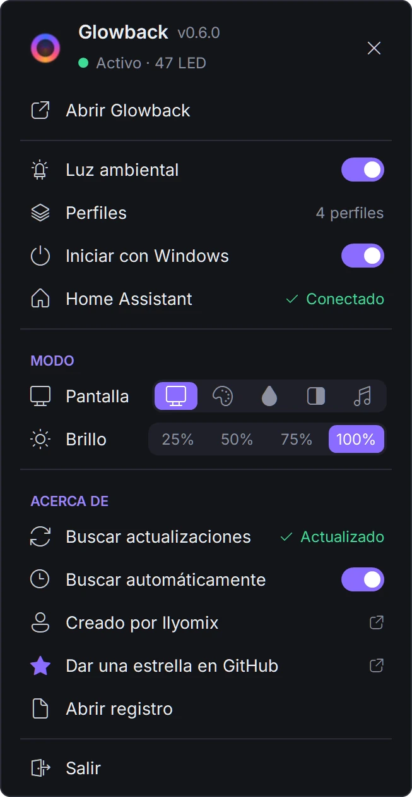

Luz ambiental para los LED RGB de la parte trasera de tu monitor.
Glowback captura tu pantalla y da a cada LED que hay detrás el color de la imagen que tiene justo delante, en directo. Tu pared pasa a formar parte de la imagen.


Cómo funciona
Tres pasos, treinta veces por segundo, en apenas medio milisegundo de CPU.
Capturar
La GPU entrega cada nuevo fotograma (DXGI, HDR incluido) y lo reduce a una diminuta cuadrícula de colores. Las bandas negras de las películas se ignoran.
Asignar
Cada LED indica su posición física. Glowback la proyecta sobre el borde de la pantalla más cercano, como un televisor Ambilight.
Iluminar
Los colores se suavizan, se avivan en las escenas oscuras y se envían a los LED por USB. Nada sale de tu PC.
Todo lo que esperas de una aplicación de verdad
Una zona por LED
Cada LED sigue su propia parte de la imagen, o cambia a un solo color promedio.
Películas, juegos, HDR
Vídeo y juegos a pantalla completa, escritorio HDR, detección de bandas negras.
App nativa de Windows
Instalador, menú Inicio, inicio con Windows y desinstalación limpia desde Configuración.
Actualizaciones en un clic
Glowback consulta GitHub cada día, verifica la descarga y se actualiza solo.
Habla tu idioma
Español, inglés, francés, alemán, italiano y portugués.
Ultraligero
Unos 0,5 ms de CPU por fotograma. La versión Python es un solo archivo, sin dependencias.
Todo se ajusta junto al reloj
Un clic en el icono del área de notificación abre un panel. Los ajustes se aplican al instante y el panel sigue abierto mientras los cambias.
- Estado en directo: activo, en pausa, número de LED
- Interruptores de luz ambiental e inicio con Windows
- Busca actualizaciones con un clic, o deja que lo haga cada día
- Cada LED sigue su zona, o un solo color promedio
- Brillo en un toque: 25, 50, 75 o 100 %
¿Es compatible mi monitor?
Glowback no depende de ninguna marca. Si se cumple uno de estos casos, funciona.
Iluminación dinámica de Windows
Tu monitor aparece en Configuración → Personalización → Iluminación dinámica. Glowback lo controla directamente.
OpenRGB
Tus LED son compatibles con OpenRGB. Inicia su servidor SDK y Glowback los encuentra automáticamente.
¿Ninguno de los dos?
Pega una tira LED detrás de la pantalla y contrólala con una placa RP2040 de 5 $.
Leer la guía DIY (en inglés) →Probado hasta ahora: AOC AGON PRO AG276QZD2 (47 LED). Informa de tu monitor →
Preguntas
¿Qué monitores son compatibles?
Cualquier monitor cuya iluminación RGB trasera se pueda controlar con la Iluminación dinámica de Windows o con OpenRGB. Ejecuta glowback --list o busca tu monitor en Configuración → Personalización → Iluminación dinámica.
¿Tengo que desactivar algo?
Sí: desactiva la Iluminación dinámica de Windows para tu monitor (Configuración → Personalización → Iluminación dinámica); si no, Windows y Glowback se pelean por los LED.
Windows dice que ha protegido mi PC. ¿Es seguro?
El instalador aún no tiene firma de código, así que SmartScreen no lo conoce. Haz clic en Más información → Ejecutar de todas formas. El código fuente y cada versión compilada son públicos en GitHub, y las actualizaciones desde la app se verifican con las sumas SHA-256 publicadas.
¿Funciona con HDR, juegos y películas a pantalla completa?
Sí. La captura por GPU gestiona juegos a pantalla completa, reproductores de vídeo y escritorios HDR, e ignora las bandas negras de las películas. Windows suele mostrar en negro los vídeos protegidos con DRM a cualquier herramienta de captura.
¿Cómo lo desinstalo?
Configuración → Aplicaciones → Aplicaciones instaladas → Glowback → Desinstalar. Los LED vuelven al efecto propio del dispositivo.
Haz que tu pared forme parte de la imagen.
Gratis, de código abierto y listo en un minuto.